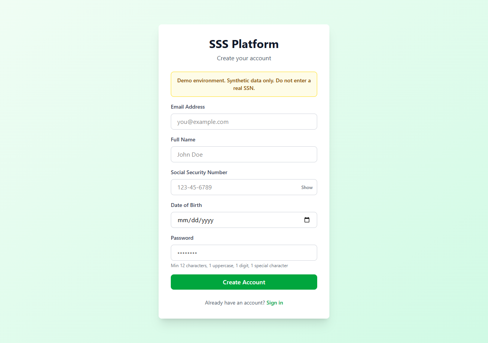
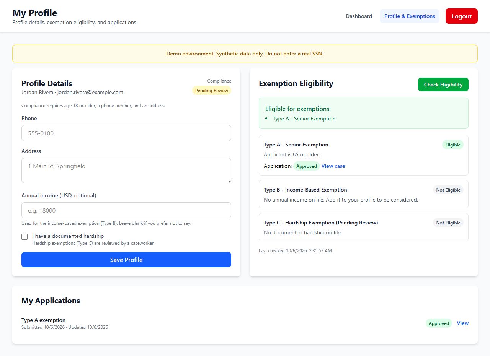
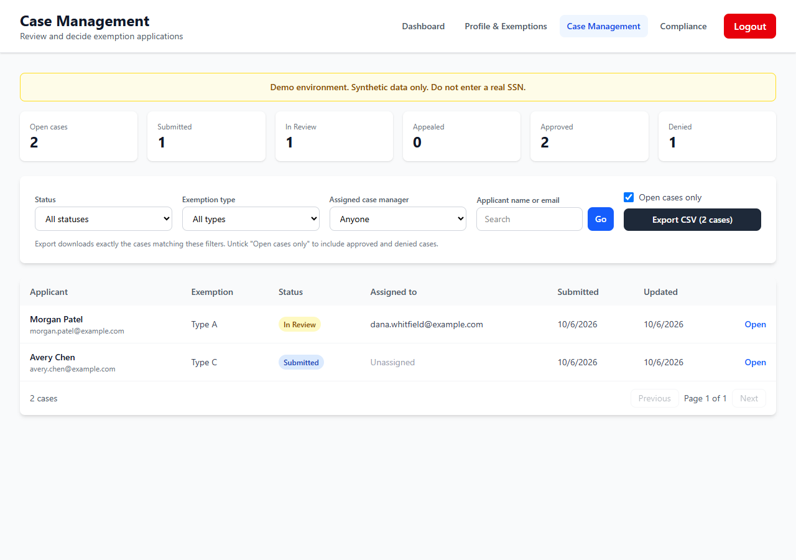
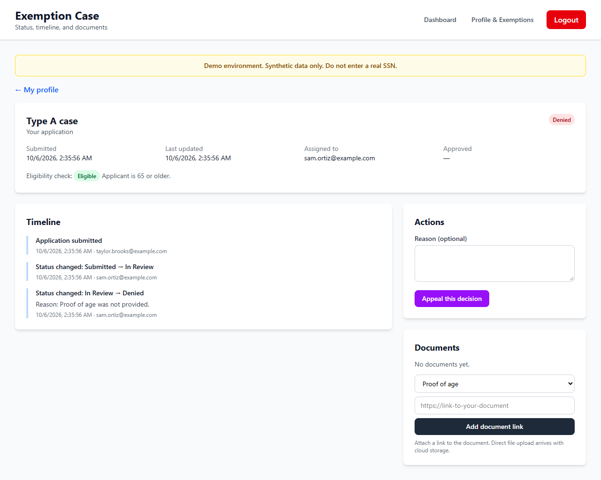
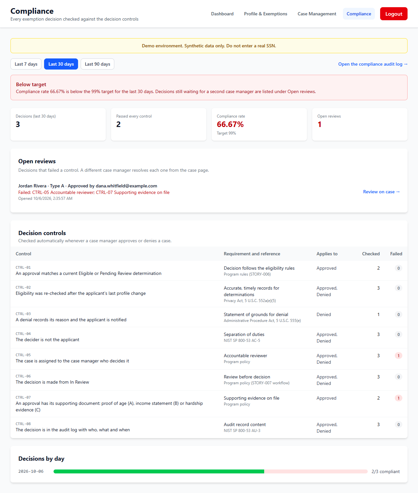
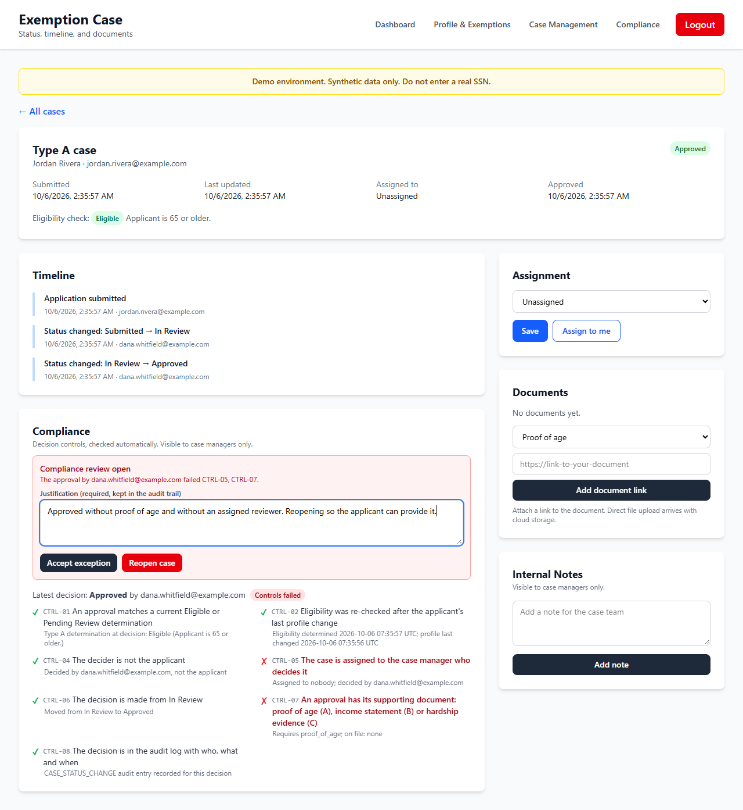
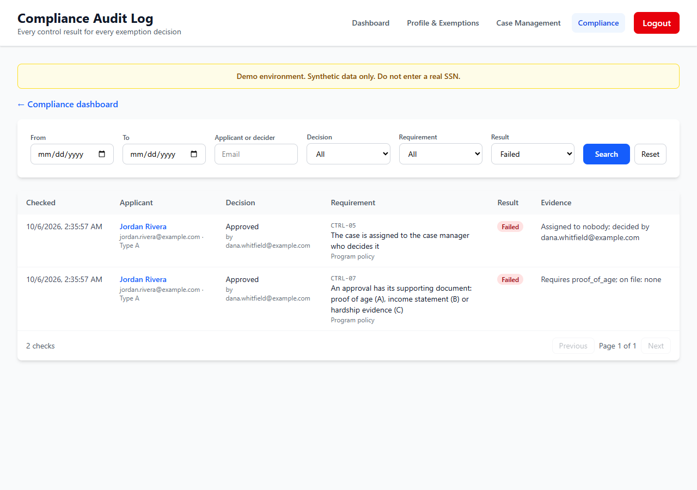
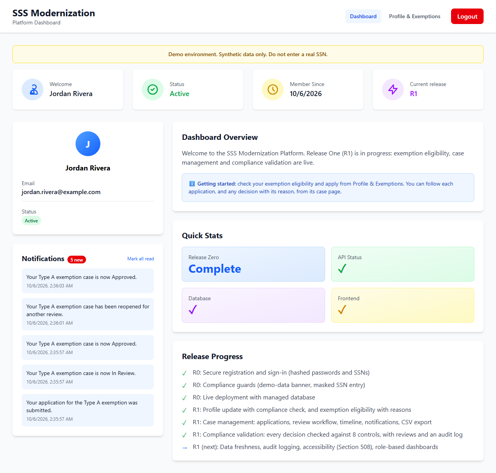

<title>SSS Modernization Demo Briefing</title>
<link rel="preconnect" href="https://fonts.googleapis.com">
<link rel="preconnect" href="https://fonts.gstatic.com" crossorigin>
<link rel="stylesheet" href="https://fonts.googleapis.com/css2?family=Merriweather:wght@700;900&family=Public+Sans:ital,wght@0,400;0,600;0,700;1,400&family=Roboto+Mono:wght@500&display=swap">
<style>
  /* Layout: one reading column of federal-document proportions; figures run the full column width.
     Type follows the U.S. Web Design System families: Merriweather display, Public Sans body, Roboto Mono for IDs. */
  :root {
    --paper: #f4f6f9;
    --surface: #ffffff;
    --ink: #15202f;
    --muted: #4d5b6e;
    --line: #d5dce6;
    --accent: #1a4480;
    --accent-soft: #e5edf7;
    --live: #1b6e43;
    --live-soft: #e2f2e8;
    --plan: #7a5300;
    --plan-soft: #f8edd5;
    --fail: #9f2a2e;
    --font-display: "Merriweather", Georgia, "Times New Roman", serif;
    --font-body: "Public Sans", "Segoe UI", Arial, sans-serif;
    --font-mono: "Roboto Mono", ui-monospace, Consolas, monospace;
    --step--1: 0.875rem;
    --step-0: 1rem;
    --step-1: 1.2rem;
    --step-2: 1.55rem;
    --step-3: 2.2rem;
  }
  @media (prefers-color-scheme: dark) {
    :root:not([data-theme="light"]) {
      --paper: #0f1622; --surface: #172131; --ink: #e6ecf4; --muted: #a5b2c4; --line: #2b3a50;
      --accent: #8db4ea; --accent-soft: #1d2f4a; --live: #7fd3a2; --live-soft: #173326;
      --plan: #f0c56b; --plan-soft: #3a2c10; --fail: #f1a0a2; color-scheme: dark;
    }
  }
  :root[data-theme="dark"] {
    --paper: #0f1622; --surface: #172131; --ink: #e6ecf4; --muted: #a5b2c4; --line: #2b3a50;
    --accent: #8db4ea; --accent-soft: #1d2f4a; --live: #7fd3a2; --live-soft: #173326;
    --plan: #f0c56b; --plan-soft: #3a2c10; --fail: #f1a0a2; color-scheme: dark;
  }

  body { background: var(--paper); color: var(--ink); font-family: var(--font-body); font-size: var(--step-0); line-height: 1.6; }
  .page { max-width: 58rem; margin-inline: auto; padding-inline: max(16px, 4vw); padding-block: 2.5rem 4rem; display: grid; gap: 3rem; }
  h1, h2, h3 { font-family: var(--font-display); text-wrap: balance; line-height: 1.25; margin: 0; }
  h1 { font-size: var(--step-3); font-weight: 900; }
  h2 { font-size: var(--step-2); font-weight: 900; }
  h3 { font-size: var(--step-1); font-weight: 700; }
  p { margin: 0; max-width: 68ch; }
  a { color: var(--accent); }
  a:focus-visible { outline: 3px solid var(--accent); outline-offset: 2px; }
  .eyebrow { font-size: var(--step--1); font-weight: 700; letter-spacing: 0.08em; text-transform: uppercase; color: var(--accent); }
  .mono { font-family: var(--font-mono); font-size: 0.85em; }
  section { display: grid; gap: 1.1rem; min-width: 0; }
  .lede { font-size: var(--step-1); color: var(--muted); }

  header.masthead { display: grid; gap: 1rem; padding-bottom: 2rem; border-bottom: 3px solid var(--accent); }
  .facts { display: flex; flex-wrap: wrap; gap: 0.5rem 1.5rem; font-size: var(--step--1); color: var(--muted); }
  .facts strong { color: var(--ink); font-weight: 600; }
  .notice { font-size: var(--step--1); color: var(--muted); border-left: 3px solid var(--line); padding-left: 0.9rem; }

  .roles { display: grid; grid-template-columns: repeat(auto-fit, minmax(14rem, 1fr)); gap: 1rem; }
  .role { background: var(--surface); border: 1px solid var(--line); border-radius: 6px; padding: 1rem 1.1rem; display: grid; gap: 0.35rem; align-content: start; }
  .role h3 { font-size: var(--step-0); }
  .role p { font-size: var(--step--1); color: var(--muted); }

  .problems { display: grid; gap: 0; border-top: 1px solid var(--line); }
  .problem { display: grid; grid-template-columns: minmax(0, 1fr) minmax(0, 1.25fr) auto; gap: 1.25rem; padding-block: 1rem; border-bottom: 1px solid var(--line); align-items: start; }
  .problem h3 { font-size: var(--step-0); }
  .problem p { font-size: var(--step--1); }
  .problem .need { color: var(--muted); }
  .pill { display: inline-block; font-size: 0.75rem; font-weight: 700; letter-spacing: 0.04em; text-transform: uppercase; border-radius: 999px; padding: 0.15rem 0.6rem; white-space: nowrap; }
  .pill.live { background: var(--live-soft); color: var(--live); }
  .pill.plan { background: var(--plan-soft); color: var(--plan); }

  ol.scenes { list-style: none; margin: 0; padding: 0; display: grid; gap: 2.5rem; counter-reset: scene; }
  .scene { display: grid; gap: 0.75rem; counter-increment: scene; }
  .scene h3::before { content: "Scene " counter(scene) " · "; color: var(--accent); font-family: var(--font-body); font-weight: 700; font-size: var(--step--1); letter-spacing: 0.06em; text-transform: uppercase; display: block; margin-bottom: 0.2rem; }
  .scene ul { margin: 0; padding-left: 1.2rem; display: grid; gap: 0.25rem; font-size: var(--step--1); max-width: 70ch; }
  figure { margin: 0; display: grid; gap: 0.4rem; }
  figure img { display: block; width: 100%; height: auto; border: 1px solid var(--line); border-radius: 6px; background: var(--surface); }
  figcaption { font-size: var(--step--1); color: var(--muted); }

  .table-wrap { overflow-x: auto; border: 1px solid var(--line); border-radius: 6px; background: var(--surface); }
  table { border-collapse: collapse; width: 100%; min-width: 34rem; font-size: var(--step--1); }
  th, td { text-align: left; padding: 0.6rem 0.8rem; border-bottom: 1px solid var(--line); vertical-align: top; }
  th { font-weight: 700; color: var(--muted); background: var(--accent-soft); }
  tr:last-child td { border-bottom: 0; }

  ul.plain { margin: 0; padding-left: 1.2rem; display: grid; gap: 0.4rem; max-width: 72ch; }

  .releases { display: grid; grid-template-columns: repeat(auto-fit, minmax(12.5rem, 1fr)); gap: 1rem; }
  .release { background: var(--surface); border: 1px solid var(--line); border-radius: 6px; padding: 1rem; display: grid; gap: 0.5rem; align-content: start; }
  .release h3 { font-size: var(--step-0); }
  .release p { font-size: var(--step--1); color: var(--muted); }
  .meter { height: 6px; border-radius: 3px; background: var(--line); overflow: hidden; }
  .meter span { display: block; height: 100%; background: var(--live); }
  .count { font-size: var(--step--1); font-weight: 700; font-variant-numeric: tabular-nums; }

  ol.outline { margin: 0; padding-left: 1.4rem; display: grid; gap: 0.35rem; font-size: var(--step--1); max-width: 72ch; }
  footer { font-size: var(--step--1); color: var(--muted); border-top: 1px solid var(--line); padding-top: 1.25rem; display: grid; gap: 0.4rem; }

  @media (max-width: 40rem) {
    .problem { grid-template-columns: minmax(0, 1fr); gap: 0.4rem; }
  }
  @media print {
    @page { size: Letter; margin: 0.6in; }
    body { background: #ffffff; }
    .page { padding: 0; gap: 2rem; }
    figure, .problem, .role, .release, tr { break-inside: avoid; }
    #walkthrough, #controls, #roadmap { break-before: page; }
  }
</style>

<main class="page">
  <header class="masthead">
    <p class="eyebrow">Colaberry · Demo for solicitation 90MC26R0004</p>
    <h1>SSS Modernization Demo</h1>
    <p class="lede">A working platform for the Selective Service System's registrant services: online accounts, exemption eligibility, case management with appeals, and automatic compliance checks on every decision.</p>
    <div class="facts">
      <span>Live demo <strong><a href="https://sss-demo-frontend.onrender.com">sss-demo-frontend.onrender.com</a></strong></span>
      <span>Status as of <strong>October 6, 2026</strong></span>
      <span>Live today <strong>2 of 5 R0 stories, 3 of 11 R1 stories</strong></span>
    </div>
    <p class="notice">Demo environment with synthetic data only. The exemption types shown (A senior, B income, C hardship) are illustrative rules built to exercise the workflow. They are not Selective Service policy.</p>
  </header>

  <section id="purpose" aria-labelledby="purpose-h">
    <p class="eyebrow">What the app is for</p>
    <h2 id="purpose-h">One place to register, apply, decide and prove it</h2>
    <p>The Selective Service System keeps the national registry that federal law requires nearly every man living in the United States to join between the ages of 18 and 25. Registration status follows people for years: it can affect eligibility for federal jobs and some state programs, so registrants, agencies and staff all need fast, accurate answers.</p>
    <p>This demo modernizes the business systems behind that work: online registration and registrant records, profile updates with compliance checks, exemption and appeal case management, compliance verification, and reporting. It shows the user experience and the controls together, so evaluators can see how the proposed approach works in practice rather than on paper.</p>
    <div class="roles">
      <div class="role">
        <h3>Registrants and applicants</h3>
        <p>Create an account, keep their profile current, see which exemptions they qualify for and why, apply, follow every step of their case, and appeal a denial.</p>
      </div>
      <div class="role">
        <h3>Case managers</h3>
        <p>Work a queue of applications, take ownership, decide with a stated reason, keep internal notes, and export case lists for reporting.</p>
      </div>
      <div class="role">
        <h3>Compliance and leadership</h3>
        <p>See whether decisions follow the rules, review any that do not, and search a complete audit log of every control result.</p>
      </div>
    </div>
  </section>

  <section id="problems" aria-labelledby="problems-h">
    <p class="eyebrow">Challenges it solves</p>
    <h2 id="problems-h">The problems this platform addresses</h2>
    <div class="problems">
      <div class="problem">
        <div><h3>Registrants can't see where they stand</h3><p class="need">People need to register, update their details and know the status of a request without calling or mailing anyone.</p></div>
        <p>Self-service accounts, a profile with a built-in compliance check, eligibility results with a plain-language reason for each, a case timeline and in-app notifications at every status change.</p>
        <span class="pill live">Live</span>
      </div>
      <div class="problem">
        <div><h3>Decisions that are hard to explain or challenge</h3><p class="need">Applicants deserve to know why they were refused and how to respond.</p></div>
        <p>Rules produce a status and a reason for every exemption type. A denial cannot be saved without a written reason, which the applicant sees, and a denied applicant can appeal from the same page.</p>
        <span class="pill live">Live</span>
      </div>
      <div class="problem">
        <div><h3>No proof that each decision followed the rules</h3><p class="need">Oversight needs evidence for every decision, not a sample.</p></div>
        <p>Every approval and denial is checked against 8 decision controls the moment it is made. A failure opens a review that only a different case manager can resolve, with a written justification. A dashboard tracks the rate against a 99% target.</p>
        <span class="pill live">Live</span>
      </div>
      <div class="problem">
        <div><h3>Sensitive personal data at risk</h3><p class="need">Social Security numbers and case records must be protected and only seen by the right people.</p></div>
        <p>SSNs are stored only as one-way hashes, never shown back or logged, and entered in a masked field. Every page of the API declares who may use it, and an automated test fails the build if any route lacks its access check.</p>
        <span class="pill live">Live</span>
      </div>
      <div class="problem">
        <div><h3>Case work spread across inboxes and spreadsheets</h3><p class="need">Staff need one queue with clear ownership.</p></div>
        <p>A shared case queue with status counts, filters, assignment, internal notes, document links and CSV export that never includes SSNs.</p>
        <span class="pill live">Live</span>
      </div>
      <div class="problem">
        <div><h3>Stale data and inaccessible screens</h3><p class="need">Records should update within seconds, and every screen must work for people using assistive technology.</p></div>
        <p>Data freshness monitoring under 30 seconds (STORY-009) and Section 508 testing (STORY-011) are the next R1 stories.</p>
        <span class="pill plan">Planned</span>
      </div>
      <div class="problem">
        <div><h3>Hosting that meets federal requirements</h3><p class="need">Production must run on FedRAMP-authorized cloud with multi-factor sign-in.</p></div>
        <p>The demo runs on commercial hosting today. AWS GovCloud infrastructure (STORY-004) waits on approval, and multi-factor sign-in has its server side built with screens to come.</p>
        <span class="pill plan">Planned</span>
      </div>
    </div>
  </section>

  <section id="walkthrough" aria-labelledby="walkthrough-h">
    <p class="eyebrow">Demo walkthrough</p>
    <h2 id="walkthrough-h">Eight scenes, about ten minutes</h2>
    <ol class="scenes">
      <li class="scene">
        <h3>A registrant creates an account</h3>
        <ul>
          <li>The banner reminds everyone this is synthetic data. The SSN field is masked, with a Show toggle.</li>
          <li>Passwords need 12 characters with a capital, a digit and a symbol. The SSN is hashed before it is stored.</li>
        </ul>
        <figure><figcaption>Registration, with the synthetic-data banner and masked SSN entry.</figcaption></figure>
      </li>
      <li class="scene">
        <h3>Eligibility, with a reason for every result</h3>
        <ul>
          <li>The profile page checks the registrant's record (18 or older, phone, address) and shows what is missing.</li>
          <li>Each exemption type returns Eligible, Pending Review or Not Eligible with a plain-language reason. The registrant applies in one click and sees the application's status below.</li>
        </ul>
        <figure><figcaption>Jordan Rivera qualifies for Type A because the applicant is 65 or older; the other types explain why not.</figcaption></figure>
      </li>
      <li class="scene">
        <h3>Case managers work one queue</h3>
        <ul>
          <li>Counts by status, filters by status, type, case manager and applicant, and an export of exactly the filtered cases.</li>
          <li>Each case shows who owns it. Unassigned work is visible at a glance.</li>
        </ul>
        <figure><figcaption>Two open applications: one in review with Dana Whitfield, one newly submitted and unassigned.</figcaption></figure>
      </li>
      <li class="scene">
        <h3>A denial always carries its reason</h3>
        <ul>
          <li>The case manager cannot deny without a reason, and the applicant sees it on the timeline.</li>
          <li>The applicant can appeal from the same page, which sends the case back for review.</li>
        </ul>
        <figure><figcaption>Taylor Brooks sees "Proof of age was not provided." and can appeal.</figcaption></figure>
      </li>
      <li class="scene">
        <h3>Every decision is checked automatically</h3>
        <ul>
          <li>When a case is approved or denied, 8 controls run at once: eligibility basis, a fresh eligibility check, reason and notice, separation of duties, ownership, review before decision, required document and an audit entry.</li>
          <li>Here one of three decisions failed two controls, so the rate is 66.67% against the 99% target and the dashboard raises an alert.</li>
        </ul>
        <figure><figcaption>The compliance dashboard: rate against target, open reviews, and failures per control with their legal or policy basis.</figcaption></figure>
      </li>
      <li class="scene">
        <h3>A second case manager reviews the failure</h3>
        <ul>
          <li>The case was approved while unassigned and without proof of age. The case page lists each control with its evidence.</li>
          <li>The manager who decided cannot clear their own review. A different manager must write a justification, then either accept the exception (logged as an override) or reopen the case, which notifies the applicant.</li>
        </ul>
        <figure><figcaption>Sam Ortiz reviews Dana Whitfield's approval and reopens it with a written reason.</figcaption></figure>
      </li>
      <li class="scene">
        <h3>Auditors search every control result</h3>
        <ul>
          <li>Filter by date range, applicant or decider, decision, control and result.</li>
          <li>Failed decisions stay in the record even after review, so the history cannot be tidied up afterwards.</li>
        </ul>
        <figure><figcaption>The audit log filtered to failures: the two controls the first decision missed.</figcaption></figure>
      </li>
      <li class="scene">
        <h3>The applicant stays informed</h3>
        <ul>
          <li>Each status change arrives as a notification with a link to the case.</li>
          <li>Applicants never see internal notes or compliance details. The compliance pages and their data return "access denied" to them.</li>
        </ul>
        <figure><figcaption>Jordan Rivera's dashboard: every step of the case as a notification, newest first, including the reopening and the final approval.</figcaption></figure>
      </li>
    </ol>
  </section>

  <section id="controls" aria-labelledby="controls-h">
    <p class="eyebrow">Decision controls</p>
    <h2 id="controls-h">What every decision is checked against</h2>
    <div class="table-wrap">
      <table>
        <thead><tr><th>Control</th><th>What is checked</th><th>Basis</th><th>Applies to</th></tr></thead>
        <tbody>
          <tr><td class="mono">CTRL-01</td><td>The approval matches a current Eligible or Pending Review determination</td><td>Program eligibility rules</td><td>Approvals</td></tr>
          <tr><td class="mono">CTRL-02</td><td>Eligibility was re-checked after the applicant's last profile change</td><td>Privacy Act, 5 U.S.C. 552a(e)(5): accurate, timely records</td><td>All decisions</td></tr>
          <tr><td class="mono">CTRL-03</td><td>A denial records its reason and the applicant is notified</td><td>Administrative Procedure Act, 5 U.S.C. 555(e)</td><td>Denials</td></tr>
          <tr><td class="mono">CTRL-04</td><td>The person deciding is not the applicant</td><td>NIST SP 800-53 AC-5, separation of duties</td><td>All decisions</td></tr>
          <tr><td class="mono">CTRL-05</td><td>The case is assigned to the case manager who decides it</td><td>Program policy: an accountable reviewer</td><td>All decisions</td></tr>
          <tr><td class="mono">CTRL-06</td><td>The decision is made from In Review</td><td>Program policy: review before decision</td><td>All decisions</td></tr>
          <tr><td class="mono">CTRL-07</td><td>The required document is on file: proof of age, income statement or hardship evidence</td><td>Program policy: supporting evidence</td><td>Approvals</td></tr>
          <tr><td class="mono">CTRL-08</td><td>The decision is in the audit log with who, what and when</td><td>NIST SP 800-53 AU-3, audit record content</td><td>All decisions</td></tr>
        </tbody>
      </table>
    </div>
  </section>

  <section id="trust" aria-labelledby="trust-h">
    <p class="eyebrow">Security and trust</p>
    <h2 id="trust-h">Built to be checked</h2>
    <ul class="plain">
      <li><strong>Protected identity data.</strong> Passwords and SSNs are stored as bcrypt hashes. The SSN is never returned by the API, never written to logs and left out of every export.</li>
      <li><strong>Access decided per endpoint.</strong> Each route declares whether it is public, for signed-in users, for the record's owner or for staff. A test fails the build when a route is missing its rule or its check.</li>
      <li><strong>Separation of duties.</strong> Case managers cannot decide their own cases or clear reviews of their own decisions.</li>
      <li><strong>Complete audit trail.</strong> Eligibility checks, status changes, overrides and every compliance result are recorded with the actor and time.</li>
      <li><strong>Verified releases.</strong> After each deploy the team checks the live site automatically: the running version, the database, all protected routes refusing anonymous requests, and every staff route refusing an ordinary registrant. Each story ships with screenshots and a written conclusion.</li>
    </ul>
  </section>

  <section id="roadmap" aria-labelledby="roadmap-h">
    <p class="eyebrow">Status and roadmap</p>
    <h2 id="roadmap-h">46 stories in four releases</h2>
    <div class="releases">
      <div class="release">
        <h3>R0 · Walking skeleton</h3>
        <div class="meter" role="img" aria-label="2 of 5 live"><span style="width:40%"></span></div>
        <p class="count">2 of 5 live</p>
        <p>Secure registration and sign-in, profile and compliance check. Multi-factor sign-in and the data pipeline are partly built; cloud infrastructure waits on AWS approval.</p>
      </div>
      <div class="release">
        <h3>R1 · Core services</h3>
        <div class="meter" role="img" aria-label="3 of 11 live"><span style="width:27%"></span></div>
        <p class="count">3 of 11 live</p>
        <p>Live: exemption eligibility, case management, compliance validation. Next: data freshness, full audit logging, Section 508 testing, role dashboards, API governance.</p>
      </div>
      <div class="release">
        <h3>R2 · AI and governance</h3>
        <div class="meter" role="img" aria-label="Not started"><span style="width:0%"></span></div>
        <p class="count">Not started</p>
        <p>Policy question answering with cited sources, drift and hallucination monitoring, human-in-the-loop review, override tracking and bias testing.</p>
      </div>
      <div class="release">
        <h3>R3 · Scale and launch</h3>
        <div class="meter" role="img" aria-label="Not started"><span style="width:0%"></span></div>
        <p class="count">Not started</p>
        <p>Load testing for 10,000 users, sub-2-second responses, multi-region failover, training, runbooks, penetration test, accessibility audit and go-live review.</p>
      </div>
    </div>
    <p>Colaberry's scope assessment placed current readiness at 33 out of 100 on its INPACT scale; the full program targets 86.</p>
  </section>

  <section id="outline" aria-labelledby="outline-h">
    <p class="eyebrow">For presenters</p>
    <h2 id="outline-h">Suggested slide outline</h2>
    <ol class="outline">
      <li>Title: SSS Modernization Demo, Colaberry, solicitation 90MC26R0004</li>
      <li>Why it matters: the registry, who depends on accurate registration status</li>
      <li>The problems: seven challenges and how the platform answers each</li>
      <li>Who uses it: registrants, case managers, compliance and leadership</li>
      <li>Registrant journey: account, eligibility with reasons, apply, follow the case (scenes 1, 2 and 8)</li>
      <li>Case management: one queue, decisions with reasons, appeals (scenes 3 and 4)</li>
      <li>Compliance by design: 8 controls on every decision, dashboard and target (scene 5 and the control table)</li>
      <li>Accountability: second-manager review and the audit log (scenes 6 and 7)</li>
      <li>Security and trust: protected SSNs, per-endpoint access, verified releases</li>
      <li>Status and roadmap: what is live today and what comes next</li>
    </ol>
  </section>

  <footer>
    <p>Prepared by Colaberry for the SSS modernization proposal. Screens come from the demo application running the code that is live at <a href="https://sss-demo-frontend.onrender.com">sss-demo-frontend.onrender.com</a>, with synthetic people and records. The first visit after a quiet period takes about a minute while the demo server wakes.</p>
  </footer>
</main>
